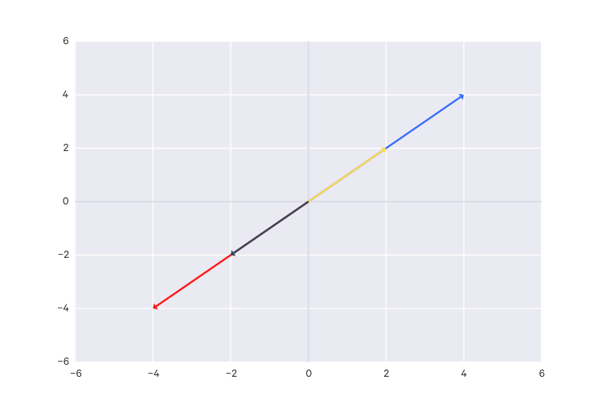
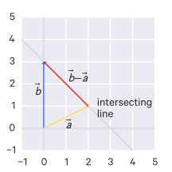
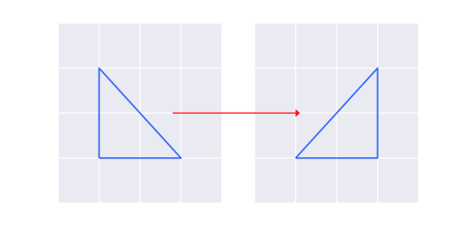
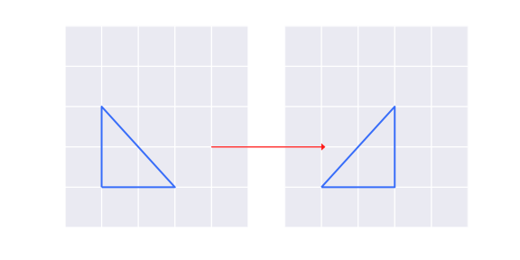
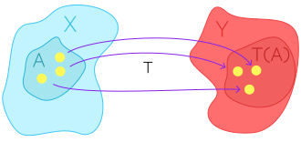
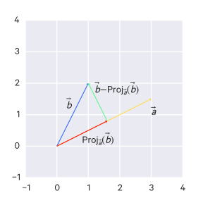

When working with data, we typically deal with many data points consisting of many dimensions. That is, each data point may have a several components; e.g. if people are your data points, they may be represented by their height, weight, and age, which constitutes three dimensions all together. These data points of many components are called vectors. These are contrasted with individual values, which are called scalars.
而多个向量又组成了矩阵.
We deal with these data points - vectors - simultaneously in aggregates known as matrices.
线性代数这门知识主要是一系列关于向量与矩阵的操作.
Linear algebra provides the tools needed to manipulate vectors and matrices.
向量
Vectors
向量有大小与方向, 例如, 以5公里/小时的速度往东. 大小在某种意义上可以看作"向量的长度".
Vectors have magnitude and direction, e.g. 5 miles/hour going east. The magnitude can be thought of, in some sense, as the "length" of the vector (this isn't quite right however, as there are many concepts of "length" - see norms).
since we are "moving" 5 on x-axis and 0 on the y-axis.
字母上的箭头经常被省略,也就是说,表示为$v$.
Note that often the arrow is dropped, i.e. the vector is notated as just $v$.
实空间
Real coordinate spaces
Vectors are plotted and manipulated in space. A two-dimensional vector, such as the previous example, may be represented in a two-dimensional space.
A vector with three components would be represented in a three-dimensional space, and so on for any arbitrary $n$ dimensions.
A real coordinate space (that is, a space consisting of real numbers) of $n$ dimensions is notated $\mathbb R^n$. Such a space encapsulates all possible vectors of that dimensionality, i.e. all possible vectors of the form $[v_1, v_2, \dots, v_n]$.
To denote a vector of $n$ dimensions, we write $x \in \mathbb R^n$.
For example: the notation for the two-dimensional real coordinate space is notated $\mathbb R^2$, which is all possible real-valued 2-tuples (i.e. all 2D vectors whose components are real numbers, e.g. $[1, 2], [-0.4, 21.4], \dots$). If we wanted to describe an arbitrary two-dimensional vector, we could do so with $\vec v \in \mathbb R^2$.
列向量与行向量
Column and row vectors
A vector $x \in \mathbb R^n$ typically denotes a column vector, i.e. with $n$ rows and 1 column.
A row vector$x^T \in \mathbb R^n$ has 1 row and $n$ columns. The notation $x^T$ is described below.
转置向量
Transposing a vector
Transposing a vector means turning its rows into columns:
This changes the magnitude of the vector, but not the direction.
向量点积
Vector dot products
The dot product (also called inner product) of two vectors $\vec{a}, \vec{b} \in \mathbb R^n$ (note that this implies they must be of the same dimension) is notated:
The norm of a vector $x \in \mathbb R^n$, denoted $||x||$, is the "length" of the vector. That is, norms are a generalization of "distance" or "length".
There are many different norms, the most common of which is the Euclidean norm (also known as the $\ell_2$ norm), denoted $||x||_2$, computed:
So the length (Euclidean norm) of a vector can be written:
$$ ||\vec{a}|| = \sqrt{\vec{a} \cdot \vec{a}} $$
单位向量
Unit vectors
Each dimension in a space has a unit vector, generally denoted with a hat, e.g. $\hat u$, which is a vector constrained to that dimension (that is, it has 0 magnitude in all other dimensions), with length 1, e.g. $||\hat u|| = 1$.
Unit vectors exists for all $\mathbb R^n$.
The unit vector is also called a normalized vector (which is not to be confused with a normal vector, which is something else entirely.)
The unit vector in the same direction as some vector $\vec{v}$ is found by computing:
$$ \hat u = \frac{\vec{v}}{||\vec{v}||} $$
For instance, in $\mathbb R^2$ space, we would have two unit vectors:
There are two special cases if the vectors are collinear, that is if $\vec{a} = c\vec{b}$:
If $c > 0$, then $\theta = 0$.
If $c < 0$, then $\theta = 180^{\circ}$
正交向量
Perpendicular vectors
With the above angle calculation, you can see that if $\vec{a}$ and $\vec{b}$ are non-zero, and their dot product is 0, that is, $\vec{a} \cdot \vec{b} = \vec{0}$, then they are perpendicular to each other.
Whenever a pair of vectors satisfies this condition $\vec{a} \cdot \vec{b} = \vec{0}$, it is said that the two vectors are orthogonal (i.e. perpendicular).
Note that because any vector times the zero vector equals the zero vector: $\vec{0} \cdot \vec{x} = \vec{0}$.
Thus the zero vector is orthogonal to everything.
Technical detail: So if the vectors are both non-zero and orthogonal, then the vectors are both perpendicular and orthogonal. But of course, since the zero vector is not non-zero, it cannot be perpendicular to anything, but it is orthogonal to everything.
法向量
Normal vectors
A normal vector is one which is perpendicular to all the points/vectors on a plane.
That is for any vector $\vec{a}$ on the plane, and a normal vector, $\vec{n}$, to that plane, we have:
$$ \vec{n} \cdot \vec{a} = \vec{0} $$
For example: given an equation of a plane, $Ax + By + Cz = D$, the normal vector is simply:
$$ \vec{n} = A\hat{i} + B\hat{j} + C\hat{k} $$
正交向量
Orthonormal vectors
Given $V = \{ \vec{v_1}, \vec{v_2}, \dots, \vec{v_k} \}$ where:
$||\vec{v_i}|| = 1$ for $i=1,2,\dots,k$. That is, the length of each vector in $V$ is 1 (that is, they have all been normalized).
$\vec{v_i} \cdot \vec{v_j} = 0$ for $i \neq j$. That is, these vectors are all orthogonal to each other.
This can be summed up as:
$$ \vec{v_i} \cdot \vec{v_j} = \begin{cases} 0 & i \neq j \\ 1 & i = j \end{cases} $$
This is an orthonormal set. The term comes from the fact that these vectors are all
orthogonal to each other, and they have all been normalized.
其他向量操作
Additional vector operations
These vector operations are less common, but included for reference.
外积
Vector outer products
For the outer product, the two vectors do not need to be of the same dimension (i.e. $x \in \mathbb R^n, y \in \mathbb R^m$), and the result is a matrix instead of a scalar:
Note that the outer product $x \otimes y$ is equivalent to the matrix multiplication $xy^T$.
叉积
Vector cross products
Cross products are much more limited than dot products. Dot products can be calculated for any $\mathbb R^n$. Cross products are only defined in $\mathbb R^3$.
Unlike the dot product, which results in a scalar, the cross product results in a vector which is orthogonal to the original vectors (i.e. it is orthogonal to the plane defined by the two original vectors).
Any line in an $n$-dimensional space can be represented using vectors.
Say you have a vector $\vec{v}$ and a set $S$ consisting of all scalar multiplications of that vector (where the scalar $c$ is any real number):
$$ S = \{ c\vec{v} \,|\, c \in \mathbb R \} $$
This set $S$ represents a line, since multiplying a vector with scalars does not changes its direction, only its magnitudes, so that set of vectors covers the entirety of the line.
A few of the infinite scalar multiplications which define the line.
But that line is around the origin. If you wanted to shift it, you need only to add a vector, which we'll call $\vec{x}$. So we could define a line as:
$$ L = \{ \vec{x} + c\vec{v} \,|\, c \in \mathbb R \} $$
Calculating the intersecting line for two vectors.
Say you want to find the line that goes through them. First you need to find the vector along that intersecting line, which is just $\vec{b} - \vec{a}$.
Although in standard form, that vector originates at the origin.
Thus you still need to shift it by finding the appropriate vector $\vec{x}$ to add to it. But as you can probably see, we can use our $\vec{a}$ to shift it, giving us:
$$ L = \{ \vec{a} + c(\vec{b} - \vec{a}) \,|\, c \in \mathbb R \} $$
And this works for any arbitrary $n$ dimensions! (Although in other spaces, this wouldn't really be a "line". In $\mathbb R^3$ space, for instance, this would define a plane.)
You can convert this form to a parametric equation, where the equation for a dimension of the vector $a_i$ looks like:
$$ a_i + (b_i - a_i)c $$
Say you are in $\mathbb R^2$ so, you might have:
$$ L = \left\lbrace \begin{bmatrix} 0 \\ 3 \end{bmatrix} + c \begin{bmatrix} -2 \\ 2 \end{bmatrix} \,|\, c \in \mathbb R \right\rbrace $$
you can write it as the following parametric equation:
are called a linearly dependent set, which means that some vector in the set can be represented as the linear combination of some of the other vectors in the set.
In this example, we could represent $\begin{bmatrix} -2 , -2 \end{bmatrix}$ using the linear combination of the other vector, i.e. $-1\begin{bmatrix} 2 , 2 \end{bmatrix}$.
You can think of a linearly dependent set as one that contains a redundant vector - one that doesn't add any more information to the set.
To put the previous examples in context, if you can show that at least one of the vectors can be described by the linear combination of the other vectors in the set, that is:
Thus you can calculate the zero vector as a linear combination of the vectors where at least one constant is non-zero, which satifies the definition for linear dependence.
So then a set is linearly independent if, to calculate the zero vector as a linear combination of the vectors, the coefficients must all be zero.
Going back to spans, the span of set of size $n$ which is linearly independent can describe that set's entire space (e.g. $\mathbb R^n$).
To multiply a $m \times n$ matrix with a vector, the vector must have $n$ components (that is, the same number of components as there are columns in the matrix, i.e. $\vec{x} \in \mathbb R^n$):
It satisfies the conditions for a linear transformation (not shown here), so a matrix-vector product is always a linear transformation.
Just to be clear: the transformation of a vector can always be expressed as that vector's product with some matrix; that matrix is referred to as the transformation matrix.
So in the equations above, $\mathbf A$ is the transformation matrix.
To reiterate:
any matrix-vector product is a linear transformation
any linear transformation can be expressed in terms of a matrix-vector product
矩阵相乘
Matrix-matrix products
To multiply two matrices, one must have the same number of columns as the other has rows. That is, you can only multiply an $m \times n$ matrix with an $n \times p$ matrix. The resulting matrix will be of $m \times p$ dimensions.
That is, if $A \in \mathbb R^{m \times n}, B \in \mathbb R^{n \times p}$, then $C = AB \in \mathbb R^{m \times p}$.
The resulting matrix is defined as such:
$$
C_{ij} = \sum^{n}_{k=1} A_{ik} B_{kj}
$$
You can break the terms out into individual matrix-vector products. Then you combine the resulting vectors to get the final matrix.
More formally, the $i$th column of the resulting product matrix is obtained by multiplying $\mathbf A$ with the $i$th column of $\mathbf B$ for $i=1,2,\dots,k$.
Matrix multiplication is not commutative. That is, for matrices $\mathbf A$ and $\mathbf B$, in general $\mathbf A \times \mathbf B \neq \mathbf B \times \mathbf A$. They may not even be of the same dimension.
Matrix multiplication is associative. For example, for matrices $\mathbf A, \mathbf B, \mathbf C$, we can say that:
$$ \mathbf A \times \mathbf B \times \mathbf C = \mathbf A \times (\mathbf B \times \mathbf C) = (\mathbf A \times \mathbf B) \times \mathbf C $$
There is also an identity matrix $\mathbf I$. For any matrix $\mathbf A$, we can say that:
$$ \mathbf A \times \mathbf I = \mathbf I \times \mathbf A = \mathbf A $$
Hadamard积
Hadamard product
The Hadamard product, sometimes called the element-wise product, is another way of multiplying matrices, but only for matrices of the same size. It is usually denoted with $\odot$. It is simply:
$$
(A \odot B)_{n,m} = A_{n,m}B_{n,m}
$$
It returns a matrix of the same size as the input matrices.
Haramard multiplication has the following propertise:
commutativity: $A \odot B = B \odot A$
associativity: $A \odot (B \odot C) = (A \odot B) \odot C$
distributivity: $A \odot (B+C) = A \odot B + A \odot C$
单位矩阵
The identity matrix
The identity matrix is an $n \times n$ matrix where every component is 0, except for those along the diagonal:
So the identity matrix is $I = \Diag(1, 1, \dots, 1)$.
三角矩阵
Triangular matrices
We say that a matrix is upper-triangular if all of its elements below the diagonal are zero.
Similarly, a matrix is lower-triangular if all of its elements above the diagonal are zero.
A matrix is diagonal if it is both upper-triangular and lower-triangular.
矩阵的性质
Some properties of matrices
结合律
Associative property
$$ (AB)C = A(BC) $$
i.e. it doesn't matter where the parentheses are.
This applies to compositions as well:
$$ (h \circ f) \circ g = h \circ (f \circ g) $$
分配律
Distributive property
$$
\begin{aligned}
A(B+C) &= AB + AC \\
(B+C)A &= BA + CA
\end{aligned}
$$
逆矩阵
Matrix inverses
If $\mathbf A$ is an $m \times m$ matrix, and if it has an inverse, then:
$$ \mathbf A \mathbf A^{-1} = \mathbf A^{-1} \mathbf A = \mathbf I $$
Only square matrices can have inverses. An inverse does not exist for all square matrices, but those that have one are called invertible or non-singular, otherwise they are non-invertible or singular.
The inverse exists if and only if $A$ is full rank.
The invertible matrices $A,B \in \mathbb R^{n \times n}$ have the following properties:
$(A^{-1})^{-1} = A$
If $Ax = B$, we can multiply by $A^{-1}$ on both sides to obtain $x = A^{-1}b$
$(AB)^{-1} = B^{-1}A^{-1}$
$(A^{-1})^T = (A^T)^{-1}$; this matrix is often denoted $A^{-T}$
伪逆
Pseudo-inverses
$A^{\dagger}$ is a pseudo-inverse (sometimes called a Moore-Penrose inverse) of $A$, which may be non-square, if the following are satisfied:
$AA^{\dagger}A = A$
$A^{\dagger}AA^{\dagger} = A$
$(AA^{\dagger})^T = AA^{\dagger}$
$(A^{\dagger}A)^T = A^{\dagger}A$
A pseudo-inverse exists and is unique for any matrix $A$. If $A$ is invertible, $A^{-1} = A^{\dagger}$.
行列式
Matrix determinants
The determinant of a square matrix $A \in \mathbb R^{n \times n}$ is a function $\Det : \mathbb R^{n \times n} \to \mathbb R$, denoted $|A|$, $\Det(A)$, or sometimes with the parentheses dropped, $\Det A$.
A more intuitive interpretation:
Say we are in a 2D space and we have some shape. It has some area. Then we apply transformations to that space. The determinant describes how that shape's area has been scaled as a result of the transformation.
This can be extended to 3D, replacing "area" with "volume".
With this interpretation it's clear that a determinant of 0 means scaling area or volume to 0, which indicates that space has been "compressed" to a line or a point (or a plane in the case of 3D).
$2 \times 2$ 矩阵的逆和行列式
Inverse and determinant for a $2 \times 2$ matrix
Say you have the matrix:
$$ \mathbf A = \begin{bmatrix} a & b \\ c & d \end{bmatrix} $$
You can calculate the inverse of this matrix as:
$$ \mathbf A^{-1} = \frac{1}{ad-bc} \begin{bmatrix} d & -b \\ -c & a \end{bmatrix} $$
Note that $\mathbf A^{-1}$ is undefined if $ad-bc=0$, which means that $\mathbf A$ is not invertible.
Intuitively:
the inverse of a matrix essentially "undoes" the transformation that matrix represents
a determinant of 0 implies a transformation that squishes everything together in some way (e.g. into a line). This means that some vectors occupy the same position on the line.
by definition, a function takes one input and maps it to one output. So if we have (what used to be) different vectors mapped to the same position, we can't take that one same position and re-map it back to different vectors - that would require a function that gives different outputs for the same input.
The denominator $ad-bc$ is called the determinant. It is notated as:
$$ \Det(\mathbf A) = |\mathbf A| = ad-db $$
$n \times n$ 矩阵的逆和行列式
Inverse and determinant for an $n \times n$ matrix
Say we have an $n \times n$ matrix $\mathbf A$.
A submatrix of $\mathbf A_{ij}$ is an $(n-1)\times(n-1)$ matrix constructed from $\mathbf A$ by ignoring the $i^{th}$ row and the $j^{th}$ column of $\mathbf A$, which we denote by $\mathbf A_{\lnot i, \lnot j}$.
You can calculate the determinant of an $n \times n$ matrix $\mathbf A$ by using some $i^{th}$ row of $\mathbf A$, where $1 \le i \le n$:
All the $\Det(\mathbf A_{ij})$ eventually reduce to the determinant of a $2 \times 2$ matrix.
行列式的标量乘法
Scalar multiplication of determinants
For an $n \times n$ matrix $\mathbf A$,
$$ \Det(k\mathbf A) = k^n \Det(\mathbf A) $$
对角矩阵和三角矩阵的行列式
Determinant of diagonal or triangular matrix
The determinant of a diagonal or triangular matrix is simply the product of the elements along its diagonal.
行列式的性质
Properties of determinants
- For $A \in \mathbb R^{n \times n}, t \in \mathbb R$, multiplying a single row by the scalar $t$ yields a new matrix $B$, for which $
B
= t
A
$.
- For $A,B \in \mathbb R^{n \times n}$, $
AB
=
A
B
- For $A,B \in \mathbb R^{n \times n}$, $
A
= 0$ if $A$ is singular (i.e. non-invertible).
- For $A,B \in \mathbb R^{n \times n}$, $
A
^{-1} = \frac{1}{
A
}$ if $A$ is non-singular (i.e. invertible).
- For $A,B \in \mathbb R^{n \times n}$, if two rows of $A$ are swapped to produce $B$, then $\Det(A) = -\Det(B)$
- The determinant of a matrix $A \in \mathbb R^{n \times n}$ is non-zero if and only if it has full rank; this also means you can check if a $A$ is invertible by checking that its determinant is non-zero.
矩阵转置
Transpose of a matrix
The transpose of a matrix $\mathbf A$ is that matrix with its columns and rows swapped, denoted $\mathbf A^T$.
More formally, let $\mathbf A$ be an $m \times n$ matrix, and let $\mathbf B = \mathbf A^T$. Then $\mathbf B$ is an $n \times m$ matrix, and $B_{ij} = A_{ji}$.
Transpose of determinants: The determinant of a transpose is the same as the determinant of the original matrix: $\Det(\mathbf A^T) = \Det(\mathbf A)$
Transposes of sums: With matrices $A, B, C$ where $C = A + B$, then $C^T = (A+B)^T = A^T + B^T$
Transposes of inverses: The transpose of the inverse is equal to the inverse of the transpose: $(A^{-1})^T = (A^T)^{-1}$
Transposes of multiplication: $(AB)^T = B^TA^T$
Transpose of a vector: for two column vectors $\vec{a}, \vec{b}$, we know that $\vec{a} \cdot \vec{b} = \vec{b} \cdot \vec{a} = \vec{a}^T\vec{b}$, from which we can derive: $(\mathbf A \vec{x}) \cdot \vec{y} = \vec{x} \cdot (\mathbf A^T \vec{y})$ (proof omitted).
对称矩阵
Symmetric matrices
A square matrix $A \in \mathbb R^{n \times n}$ is symmetric if $A = A^T$.
It is anti-symmetric if $A = -A^T$.
For any square matrix $A \in \mathbb R^{n \times n}$, the matrix $A + A^T$ is symmetric and the matrix $A - A^T$ is anti-symmetric. Thus any such $A$ can be represented as a sum of a symmetric and an anti-symmetric matrix:
The set of all symmetric matrices of dimension $n$ is often denoted as $\mathbb S^n$, so you can denote a symmetric $n \times n$ matrix $A$ as $A \in \mathbb S^n$.
二次型
The quadratic form
Given a square matrix $A \in \mathbb R^{n \times n}$ and a vector $x \in \mathbb R$, the scalar value $x^TAx$ is called a quadratic form:
$A$ is positive definite (PD) if for all non-zero vectors $x \in \mathbb R^n, x^TAx > 0$.
This is often denoted $A \succ 0$ or $A > 0$.
The set of all positive definite matrices is denoted $\mathbb S^n_{++}$.
$A$ is positive semidefinite (PSD) if for all vectors $x \in \mathbb R^n, x^TAx \geq 0$.
This is often denoted $A \succeq 0$ or $A \geq 0$.
The set of all positive semidefinite matrices is denoted $\mathbb S^n_{+}$.
$A$ is negative definite (ND) if for all non-zero vectors $x \in \mathbb R^n, x^TAx < 0$.
This is often denoted $A \prec 0$ or $A < 0$.
$A$ is negative semidefinite (NSD) if for all vectors $x \in \mathbb R^n, x^TAx \leq 0$.
This is often denoted $A \preceq 0$ or $A \leq 0$.
$A$ is indefinite if it is neither positive semidefinite nor negative semidefinite, that is, if there exists $x_1, x_2 \in \mathbb R^n$ such that $x_1^TAx_1 > 0$ and $x_2^TAx_2 < 0$.
Some other properties of note:
If $A$ is positive definite, then $-A$ is negative definite and vice versa.
If $A$ is positive semidefinite, then $-A$ is negative semidefinite and vice versa.
If $A$ is indefinite, then $-A$ is also indefinite and vice versa.
Positive definite and negative definite matrices are always invertible.
For any matrix $A \in R^{m \times n}$, which does not need to be symmetric or square, the matrix $G = A^TA$, called a Gram matrix, is always positive semidefinite.
If $m \geq n$ and $A$ is full rank, then $G$ is positive definite.
Essentially, "positive semidefinite" is to matrices as "non-negative" is to scalar values (and "positive definite" as "positive" is to scalar values).
矩阵迹
The Trace
The trace of a square matrix $A \in \mathbb R^{n \times n}$ is denoted $\Tr(A)$ and is the sum of the diagonal elements in the matrix:
When $\mathbf C$ is an $n \times n$ matrix (i.e. square) whose columns form an orthonormal set, we say that $\mathbf C$ is an orthogonal matrix.
Orthogonal matrices have the property of $C^TC = I = CC^T$.
Orthogonal matrices also have the property that operating on a vector with an orthogonal matrix will not change its Euclidean norm, i.e. $||Cx||_2 = ||x||_2$ for any $x \in \mathbb R^n$.
正交矩阵角度和长度保留
Orthogonal matrices preserve angles and lengths
For an orthogonal matrix $\mathbf C$, when you multiply $\mathbf C$ by some vector, the length and angle of the vector is preserved:
Is the shaded set of vectors $S$ a subspace of $\mathbb R^2$?
Is $S$ a subspace of $\mathbb R^2$?
It does contain the zero vector
It is closed under addition:
$$ \begin{bmatrix} a \\ b \end{bmatrix} + \begin{bmatrix} c \\ d \end{bmatrix} =
\begin{bmatrix} a + c \\ b + d \end{bmatrix} $$
Since a & b are both > 0 (that was a criteria for the set), the a+b will also be
greater than 0, so it will also be in the set (there were no constraints on the
second component so it doesn't matter what that is)
It is NOT closed under multiplcation:
$$ -1\begin{bmatrix} a \\ b \end{bmatrix} = \begin{bmatrix} -a \\ -b \end{bmatrix} $$
Since a is >= 0, -a will be <= 0, which falls outside the constraints of the set
and thus is not contained within the set.
So no, this set is not a subspace of $\mathbb R^2$.
张成和子空间
Spans and subspaces
Let's say we have the set:
$$ U = \Span(\vec{v_1}, \vec{v_2}, \vec{v_3}) $$
where each vector has $n$ components.
Is this a valid subspace of $\mathbb R^n$?
Since the span represents all the linear combinations of those vectors, we can define an arbitrary vector in the set as:
that's also just another linear combination in the set.
子空间的基
Basis of a subspace
If we have a subspace $V = \Span(S)$ where the set of vectors $S = \vec{v_1}, \vec{v_2}, \dots, \vec{v_n}$ is linearly independent, then we can say that $S$ is a basis for $V$.
A set $S$ is the basis for a subspace $V$ if $S$ is linearly independent and its span defines $V$. In other words, the basis is the minimum set of vectors that spans the subspace that it is a basis of.
All bases for a subspace will have the same number of elements.
Intuitively, the basis of a subspace is a set of vectors that can be linearly combined to describe any vector in that subspace. For example, the vectors [0,1] and [1,0] form a basis for $\mathbb R^2$.
子空间的维度
Dimension of a subspace
The dimension of a subspace is the number of elements in a basis for that subspace.
矩阵的零空间
Nullspace of a matrix
Say we have:
$$
\mathbf A \vec{x} = \vec{0}
$$
If you have a set $N$ of all $x \in \mathbb R^n$ that satisfies this equation, do you have a valid subspace?
Of course if $\vec{x} = \vec{0}$ this equation is satisfied. So we know the zero vector is part of this set (which is a requirement for a valid subspace).
The other two properties (closure under multiplication and addition) necessary for a subspace also hold:
So yes, the set $N$ is a valid subspace, and it is a special subspace: the nullspace of $\mathbf A$, notated:
$$ N(\mathbf A) $$
That is, the nullspace for a matrix $\mathbf A$ is the subspace described by the set of vectors which yields the zero vector which multiplied by $\mathbf A$, that is, the set of vectors which are the solutions for $\vec{x}$ in:
$$
\mathbf A \vec{x} = \vec{0}
$$
Or, more formally, if $\mathbf A$ is an $m \times n$ matrix:
$$ N(\mathbf A) = \{ \vec{x} \in \mathbb R^n \, | \, \mathbf A \vec{x} = \vec{0} \} $$
The nullspace for a matrix $A$ may be notated $\mathcal N(A)$.
To put nullspace (or "kernel") another way, it is space of all vectors that map to the zero vector after applying the transformation the matrix represents.
零空间与线性无关
Nullspace and linear independence
If you take each column in a matrix $\mathbf A$ as a vector $\vec{v_i}$, that set of vectors is linearly independent if the nullspace of $\mathbf A$ consists of only the zero vector. That is, if:
$$ N(\mathbf A) = \{\vec{0}\} $$
The intuition behind this is because, if the linear combination of a set of vectors can only equal the zero vector if all of its coefficients are zero (that is, its coefficients are components of the zero vector), then it is linearly independent:
Again, a matrix can be represented as a set of column vectors.
The columnspace of a matrix (also called the range of the matrix) is all the linear combinations (i.e. the span) of these column vectors:
Because any span is a valid subspace, the columnspace of a matrix is a valid subspace.
So if you expand out the matrix-vector product, you'll see that every matrix-vector product is within that matrix's columnspace:
$$
\begin{aligned}
\{ \mathbf A \vec{x} \, &| \, \vec{x} \in \mathbb R^n \} \\
\mathbf A \vec{x} &= x_1\vec{v_1} + x_2\vec{v_2} + \dots + x_n\vec{v_n} \\
\mathbf A \vec{x} &= C(\mathbf A)
\end{aligned}
$$
That is, for any vector in the space $\mathbb R^n$, multiplying the matrix by it just yields another linear combination of that matrix's column vectors. Therefore it is also in the columnspace.
The columnspace (range) for a matrix $A$ may be notated $\mathcal R(A)$.
列空间的秩
Rank of a columnspace
The column rank of a columnspace is its dimension, that is, it is the number of elements in a basis for that columnspace (i.e. the largest number of columns of the matrix which constitute a linearly independent set):
$$ \Dim(C(\mathbf A)) = \Rank(C(\mathbf A)) $$
行空间
Rowspace
The rowspace of a matrix $\mathbf A$ is the columnspace of $\mathbf A^T$, i.e. $C(\mathbf A^T)$.
The row rank of a matrix is similarly the number of elements in a basis for that rowspace.
秩
Rank
Note that for any matrix $A$, the column rank and the row rank are equal, so they are typically just referred to as $\Rank(A)$.
The rank has some properties:
For $A \in \mathbb R^{m \times n}$, $\Rank(A) \leq \min(m, n)$. If $\Rank(A) = \min(m,n)$, then $A$ is said to be full rank.
For $A \in \mathbb R^{m \times n}, \Rank(A) = \Rank(A^T)$
For $A \in \mathbb R^{m \times n}, B \in \mathbb R^{n \times p}, \Rank(AB) \leq \min(\Rank(A), \Rank(B))$
The rank of a transformation refers to the number of dimensions in the output.
A matrix is full-rank if it has rank equal to the number of dimensions in its originating space. I.e. they represent a transformation that preserves the dimensionality (it does not collapse it to a lower dimension space).
标准基
The standard basis
The set of column vectors in an identity matrix $\mathbf I_n$ is known as the standard basis for $\mathbb R^n$.
Each of those column vectors is notated $\vec{e_i}$. E.g., in an identity matrix, the column vector:
That is, the orthogonal complement of a subspace $V$ is the set of all vectors where the dot product of each vector with each vector from $V$ is 0, that is where all vectors in the set are orthogonal to all vectors in $V$.
$V^{\perp}$ is a subspace (proof omitted).
列空间, 零空间, 转置
Columnspaces, nullspaces, and transposes
$C(\mathbf A)$ is the orthogonal complement to $N(\mathbf A^T)$, and vice versa:
Basically what has happened here is a new coordinate system based off of the basis $B$ is being used.
示例
Example
Say we have $\vec{v_1} = \begin{bmatrix} 2 \\ 1 \end{bmatrix}, \vec{v_2} = \begin{bmatrix} 1 \\ 2 \end{bmatrix}$, where $B = \{\vec{v_1}, \vec{v_2}\}$ is the basis for $\mathbb R^2$.
The point $(8,7)$ in $\mathbb R^2$ is equal to $3\vec{v_1} + 2\vec{v_2}$. If we set:
$$ \vec{a} = 3\vec{v_1} + 2\vec{v_2} $$
Then we can describe $\vec{a}$ with respect to $B$ :
say there is some $n \times k$ matrix where the column vectors are the basis vectors:
$$ \mathbf C = [\vec{v_1}, \vec{v_2}, \dots, \vec{v_k}] $$
We can do:
$$ \mathbf C [\vec{a}]_B = \vec{a} $$
The matrix $\mathbf C$ is known as the change of basis matrix and allows us to get $\vec{a}$ in standard coordinates.
可逆基变换
Invertible change of basis matrix
Given the basis of some subspace:
$$ B = \{ \vec{v_1}, \vec{v_2}, \dots, \vec{v_k} \} $$
where $\vec{v_1}, \vec{v_2}, \dots, \vec{v_k} \in \mathbb R^n$, and we have a change of basis matrix:
$$ \mathbf C = [\vec{v_1}, \vec{v_2}, \dots, \vec{v_k}] $$
Assume:
$\mathbf C$ is invertible
$\mathbf C$ is square (that is, $k=n$, which implies that we have $n$ basis vectors, that is, $B$ is a basis for $\mathbb R^n$)
$\mathbf C$'s columns are linearly independent (which they are because it is formed out of basis vectors, which by definition are linearly independent)
Under these assumptions:
If $\mathbf C$ is invertible, the span of $B$ is equal to $\mathbb R^n$.
If the span of $B$ is equal to $\mathbb R^n$, $\mathbf C$ is invertible.
Thus:
$$ [\vec{a}]_B = C^{-1}\vec{a} $$
一组基下的转换矩阵
Transformation matrix with respect to a basis
Say we have a linear transformation $T: \mathbb R^n \to \mathbb R^n$, which we can express as $T(\vec{x}) = \mathbf A \vec{x}$. This is with respect to the standard basis; we can say $\mathbf A$ is the transformation for $T$ with respect to the standard basis.
Say we have another basis $B = \{ \vec{v_1}, \vec{v_2}, \dots, \vec{v_n} \}$ for $\mathbb R^n$, that is, it is a basis for for $\mathbb R^n$.
We could write:
$$ [T(\vec{x})]_B = \mathbf D [\vec{x}]_B $$
and we call $\mathbf D$ the transformation matrix for $T$ with respect to the basis $B$.
Then we have (proof omitted):
$$ \mathbf D = \mathbf C^{-1} \mathbf A \mathbf C $$
where:
$\mathbf D$ is the transformation matrix for $T$ with respect to the basis $B$
$\mathbf A$ is the transformation matrix for $T$ with respect to the standard basis
$\mathbf C$ is the change of basis matrix for $B$
正交基
Orthonormal bases
If $B$ is an orthonormal set, it is linearly independent, and thus it could be a basis. If $B$is a basis, then it is an orthonormal basis.
正交基下的坐标
Coordinates with respect to orthonormal bases
Orthonormal bases make good coordinate systems - it is much easier to find $[\vec{x}]_B$ if $B$ is an orthonormal basis. It is just:
Put another way, a linear transformation is a transformation in which lines are preserved (they don't become curves) and the origin remains at the origin. This can be thought of as transforming space such that grid lines remain parallel and evenly-spaced.
A linear transformation of a space can be described in terms of transformations of the space's basis vectors, e.g. $\hat i, \hat j$. For example, if the basis vectors $\hat i, \hat j$ end up at $[a,c], [b,d]$ respectively, an arbitrary vector $[x,y]$ would be transformed to:
$$
x \begin{bmatrix}a \\ c \end{bmatrix} +
y \begin{bmatrix}b \\ d \end{bmatrix} =
\begin{bmatrix}
ax + by \\ cx + dy
\end{bmatrix}
$$
which is equivalent to:
$$
\begin{bmatrix}
a & b \\
c & d
\end{bmatrix}
\begin{bmatrix}
x \\ y
\end{bmatrix}
$$
In this way, we can think of matrices as representing a transformation of space and the transformation itself as a product with that matrix.
Extending this further, you can think of matrix multiplication as a composition of transformations - each matrix represents one transformation; the resulting matrix product is a composition of those transformations.
The matrix does not have to be square; i.e. it does not have to share dimensionality (in terms of the matrix's rows) with the space it's being applied to. The resulting transformation will have different dimensions.
For example, a 3x2 matrix will transform a 2D space to a 3D space.
示例
Linear transformation examples
These examples are all in $\mathbb R^2$ since it's easier to visualize. But you can scale them up to any $\mathbb R^n$.
镜面
Reflection
An example of reflection.
To get from the triangle on the left and reflect it over the $y$-axis to get the triangle on the right, all you're doing is changing the sign of all the $x$ values.
So a transformation would look like:
$$ T(\begin{bmatrix} x \\ y \end{bmatrix}) = \begin{bmatrix} -x \\ y \end{bmatrix} $$
缩放
Scaling
Say you want to double the size of the triangle instead of flipping it. You'd just scale up all of its values:
$$ T(\begin{bmatrix} x \\ y \end{bmatrix}) = \begin{bmatrix} 2x \\ 2y \end{bmatrix} $$
线性变换组合
Compositions of linear transformation
The composition of linear transformations $S(\vec{x}) = A\vec{x}$ and $T(\vec{x}) = B\vec{x}$ is denoted:
$$ T \circ S(\vec{x}) = T(S(\vec{x})) $$
This is read: "the composition of $T$ with $S$".
If $T: Y \to Z$ and $S: X \to Y$, then $T \circ S: X \to Z$.
A composition of linear transformations is also a linear transformation (proof omitted here). Because of this, this composition can also be expressed:
$$ T \circ S(\vec{X}) = C\vec{x} $$
Where $C = BA$ (proof omitted), so:
$$ T \circ S(\vec{X}) = BA\vec{x} $$
核
Kernels
The kernel of T, denoted $\Ker(T)$, is all of the vectors in the domain such that the transformation of those vectors is equal to the zero vector:
You may notice that, because $T(\vec{x}) = \mathbf A \vec{x}$,
$$ \Ker(T) = N(\mathbf A) $$
That is, the kernel of the transformation is the same as the nullspace of the transformation matrix.
象
Images
定义域子集的象
Image of a subset of a domain
When you pass a set of vectors (i.e. a subset of a domain $\mathbb R^n$) through a transformation, the result is called the image of the set under the transformation. E.g. $T(S)$ is the image of $S$ under $T$.
For example, say we have some vectors which define the triangle on the left. When a transformation is applied to that set, the image is the result on the right.
Example: Image of a triangle.
Another example: if we have a transformation $T: X \to Y$ and $A$ which is a subset of $T$, then $T(A)$ is the image of $A$ under $T$, which is equivalent to the set of transformations for each vector in $A$ :
$$ T(A) = \{ T(\vec{x}) \in Y \, | \, \vec{x} \in A \} $$
$T: X \to Y$, where $A \subseteq X$.
Images describe surjective functions, that is, a surjective function $f : X \to Y$ can also be written:
$$ \Img(f) = Y $$
since the image of the transformation encompasses the entire codomain $Y$.
子空间的象
Image of a subspace
The image of a subspace under a transformation is also a subspace. That is, if $V$ is a subspace, $T(V)$ is also a subspace.
变换的象
Image of a transformation
If, instead of a subset or subspace, you take the transformation of an entire space, i.e. $T(\mathbb R^n)$, the terminology is different: that is called the image of $T$, notated $\Img(T)$.
Because we know matrix-vector products are linear transformations:
$$ T(\vec{x}) = \mathbf A \vec{x} $$
The image of a linear transformation matrix $\mathbf A$ is equivalent to its column space, that is:
$$ \Img(T) = C(\mathbf A) $$
集合的原象
Preimage of a set
The preimage is the inverse image. For instance, consider a transformation mapping from the domain $X$ to the codomain $Y$ :
$$ T: X \to Y $$
And say you have a set $S$ which is a subset of $Y$. You want to find the set of values in $X$ which map to $S$, that is, the subset of $X$ for which $S$ is the image.
For a set $S$, this is notated:
$$ T^{-1}(S) $$
Note that not every point in $S$ needs to map back to $X$. That is, $S$ may contain some points for which there are no corresponding points in $X$. Because of this, the image of the preimage of $S$ is not necessarily equivalent to $S$, but we can be sure that it is at least a subset:
$$ T(T^{-1}(S)) \subseteq S $$
投影
Projections
A projection can kind of be thought of as a "shadow" of a vector:
Here, we have the projection of $\vec{x}$ - the red vector - onto the green line $L$. The projection is the dark red vector. This example is in $\mathbb R^2$ but this works in any $\mathbb R^n$.
Alternatively, it can be thought of answering "how far does one vector go in the direction of another vector?". In the accompanying figure, the projection of $b$ onto $a$ tells us how far $b$ goes in the direction of $a$.
The projection of $\vec{x}$ onto line $L$ is notated:
$$ \Proj_L(\vec{x}) $$
More formally, a projection of a vector $\vec{x}$ onto a line $L$ is some vector in $L$ where $\vec{x} - \Proj_L(\vec{x})$ is orthogonal to $L$.
A line can be expressed as the set of all scalar multiples of a vector, i.e:
$$ L = \{ c\vec{v} \, | \, c \in \mathbb R \} $$
So we know that "some vector in $L$" can be represented as $c\vec{v}$ :
$$ \Proj_L(\vec{x}) = c\vec{v} $$
By our definition of a projection, we also know that $\vec{x} - \Proj_L(\vec{x})$ is orthogonal to $L$, which can now be rewritten as:
Also note that the length of a projection (i.e. the scalar component of the projection) is given by the dot product of the two vectors. For example, in the accompanying figure, the length of $\Proj_{\vec a}(\vec b)$ is $a \cdot b$.
投影到子空间
Projections onto subspaces
Given that $V$ is a subspace of $\mathbb R^n$, we know that $V^{\perp}$ is also a subspace of $\mathbb R^n$, and we have a vector $\vec{x}$ such that $\vec{x} \in \mathbb R^n$, we know that $\vec{x} = \vec{v} + \vec{w}$ where $\vec{v} \in V$ and $\vec{w} \in V^{\perp}$, then:
Note that $\mathbf A (\mathbf A^T \mathbf A)^{-1}\mathbf A^T$ is just some matrix, which we can call $\mathbf B$, so this is in the form of a linear transform, $\mathbf B \vec{x}$.
Also $\vec{v} = \Proj_V\vec{x}$, so:
$$ \vec{x} = \Proj_V\vec{x} + \vec{w} $$
where $\vec{w}$ is a unique member of $V^{\perp}$.
使用正交基投影到子空间
Projections onto subspaces with orthonormal bases
Given that $V$ is a subspace of $\mathbb R^n$ and $B = \{ \vec{v_1}, \vec{v_2}, \dots, \vec{v_k} \}$ is an orthonormal basis for $V$. We have a vector $\vec{x} \in \mathbb R^n$, so $\vec{x} = \vec{v} + \vec{w}$ where $\vec{v} \in V$ and $\vec{w} \in V^{\perp}$.
A transformation $T(\vec{x}) = \mathbf A \vec{x}$ is injective ("one-to-one") if the the nullspace of $\mathbf A$ contains only the zero vector:
$$ N(\mathbf A) = \{ \vec{0} \} $$
which is true if the set of $\mathbf A$'s column vectors is linearly independent.
This can also be stated as:
$$ \Rank(\mathbf A) = n $$
是否可逆
Determining if a transformation is invertible
A transformation is invertible if it is both injective and surjective.
For a transformation to be surjective:
$$ \Rank(\mathbf A) = m $$
And for a transformation to be surjective:
$$ \Rank(\mathbf A) = n $$
Therefore for a transformation to be invertible:
$$ \Rank(\mathbf A) = m = n $$
So the transformation matrix $\mathbf A$ must be a square matrix.
线性变换的逆变换
Inverse transformations of linear transformations
Inverse transformations are linear transformations if the original transformation is both linear and invertible. That is, if $T$ is invertible and linear, $T^{-1}$ is linear:
Say we have a linear transformation $T: \mathbb R^n \to \mathbb R^n$ :
$$ T(\vec{v}) = \mathbf A \vec{v} = \lambda\vec{v} $$
That is, $\vec{v}$ is scaled by a transformation matrix $\lambda$.
We say that:
$\vec{v}$ is the eigenvector for $T$
$\lambda$ is the eigenvalue associated with that eigenvector
Eigenvectors are vectors for which matrix multiplication is equivalent to only a scalar multiplication, nothing more. $\lambda$, the eigenvalue, is the scalar that the transformation matrix $\mathbf A$ is equivalent to.
Another way to put this: given a square matrix $A \in \mathbb R^{n \times n}$, we say $\lambda \in \mathbb C$ is an eigenvalue of $A$ and $x \in \mathbb C^n$ is the corresponding eigenvector if:
$$
Ax = \lambda x, x \neq 0
$$
Note that $\mathbb C$ refers to the set of complex numbers.
So this means that multiplying $A$ by $x$ just results in a new vector which points in the same direction has $x$ but scaled by a factor $\lambda$.
For any eigenvector $x \in \mathbb C^n$ and a scalar $t \in \mathbb C$, $A(cx) = cAx = c \lambda x = \lambda(cx)$, that is, $cx$ is also an eigenvector - but when talking about "the" eigenvector associated with $\lambda$, it is assumed that the eigenvector is normalized to length 1 (though you still have the ambiguity that both $x$ and $-x$ are eigenvectors in this sense).
Eigenvalues and eigenvectors come up when maximizing some function of a matrix.
So what are our eigenvectors? What $\vec{v}$ satisfies:
$$ \mathbf A \vec{v} = \lambda\vec{v}, \vec{v} \neq 0$$
We can do:
$$
\begin{aligned}
\mathbf A \vec{v} &= \lambda \vec{v} \\
\vec{0} &= \lambda \vec{v} - \mathbf A \vec{v}
\end{aligned}
$$
We know that $\vec{v} = \mathbf I_n \vec{v}$, so we can do:
The first term, $\lambda \mathbf I_n - \mathbf A$, is just some matrix which we can call $\mathbf B$, so we have:
$$ \vec{0} = \mathbf B \vec{v} $$
which, by our definition of nullspace, indicates that $\vec{v}$ is in the nullspace of $\mathbf B$. That is:
$$ \vec{v} \in N(\lambda \mathbf I_n - \mathbf A) $$
特征值和特征向量的属性
Properties of eigenvalues and eigenvectors
The trace of $A$ is equal to the sum of its eigenvalues: $\Tr(A) = \sum^n_{i=1} \lambda_i$.
The determinant of $A$ is equal to the product of its eigenvalues: $|A| = \prod^n_{i=1} \lambda_i$.
The rank of $A$ is equal to the number of non-zero eigenvalues of $A$.
If $A$ is non-singular, then $\frac{1}{\lambda_i}$ is an eigenvalue of $A^{-1}$ with associated eigenvector $x_i$, i.e. $A^{-1}x_i = (\frac{1}{\lambda_i})x_i$.
The eigenvalues of a diagonal matrix $D = \Diag(d_1, \dots, d_n)$ are just the diagonal entries $d_1, \dots, d_n$.
对角化的矩阵
Diagonalizable matrices
All eigenvector equations can be written simultaneously as:
$$
AX = X\Lambda
$$
where the columns of $X \in \mathbb R^{n \times n}$ are the eigenvectors of $A$ and $\Lambda$ is a diagonal matrix whose entries are the eigenvalues of $A$, i.e. $\Lambda = \Diag(\lambda_1, \dots, \lambda_n)$.
If the eigenvectors of $A$ are linearly independent, then the matrix $X$ will be invertible, so that $A = X \Lambda X^{-1}$. A matrix that can be written in this form is called diagonalizable.
对称矩阵的特征值和特征向量
Eigenvalues & eigenvectors of symmetric matrices
For a symmetric matrix $A \in \mathbb S^n$, the eigenvalues of $A$ are all real and the eigenvectors of $A$ are all orthonormal.
If for all of $A$'s eigenvalues $\lambda_i$...
$\lambda_i > 0$, then $A$ is positive definite.
$\lambda_i \geq 0$, then $A$ is positive semidefinite.
$\lambda_i < 0$, then $A$ is negative definite.
$\lambda_i \leq 0$, then $A$ is negative semidefinite.
have both positive and negative values, then $A$ is indefinite.
示例
Example
Say we have a linear transformation $T(\vec{x}) = \mathbf A \vec{x}$. Here are some example values of $\vec{x}$ being input and the output vectors they yield (it's not important here what $\mathbf A$ actually looks like, its just to help distinguish what is and isn't an eigenvector.)
$\vec{x}$ is an eigenvector, it was only scaled by $\mathbf A$. This is a
simple example where the vector was scaled up by 2, so the eigenvalue here is 2.
特征空间
Eigenspace
The eigenvectors that correspond to an eigenvalue $\lambda$ form the eigenspace for that $\lambda$, notated $E_{\lambda}$ :
$$ E_{\lambda} = N(\lambda \mathbf I_n - \mathbf A) $$
特征基
Eigenbasis
Say we have an $n \times n$ matrix $\mathbf A$. An eigenbasis is a basis for $\mathbb R^n$ consisting entirely of eigenvectors for $\mathbf A$.
张量
Tensors
Tensors are generalizations of scalars, vectors, and matrices. A tensor is distinguished by its rank, which is the number of indices it has. A scalar is a $0^{th}$-rank tensor (it has no indices), a vector is a $1^{th}$-rank tensor, i.e. its components are accessed by one index, e.g. $x_i$, and a matrix is a $2^{th}$-rank tensor, i.e. its components are accessed by two indices, e.g. $X_{i,j}$, and so on.
Just as we have scalar and vector fields, we also have tensor fields.